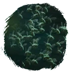
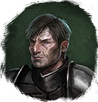

Открыть в интерактивной вики →
| Уровень | 40 |
|---|---|
| Прокачка | нет |
| Ранг в стае | 3 |
| Здоровье | 1400 |
| Мана | 900 |
| Выносливость | 1600 |
| Статистика | Уровень: 40, ранг: 3, здоровье: 1400, мана: 900, выносливость: 1600 |
Цена
12  Империал
Империал
ИмпериалГде взять
Покупается у Дрессировщика Питера

Дрессировщик ПитерНавыки


Доп. информация
Требуемый уровень: 40
Цена: 15 империалов
Покупка: у дрессировщика Питера
Может получать опыт — НЕТ
Описание
 | Никто не любит, когда над ухом жужжит. Рой насекомых пугает противников и мгновенно убивает ядом. Атакует физически, издалека и ментально. Использует: Укус, Прицельный удар, Отравление, Рвота, Плевок ядом, Боевой клич, Рёв, Природная стойкость, Заражение. | |